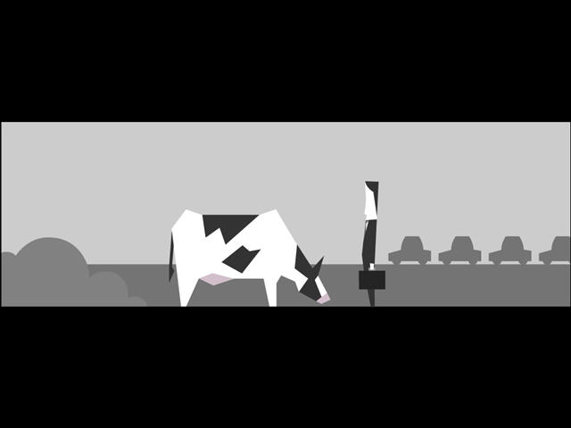

List
| Game | Author | Date |
|---|---|---|
| Passage | Jason Rohrer | 2007 |
| Every Day the Same Dream | Molleindustria | 2013 |
| Getting Over It with Bennett Foddy | Bennett Foddy | 2017 |
Feeling of some games that I played
| Game | Author | Date |
|---|---|---|
| Passage | Jason Rohrer | 2007 |
| Every Day the Same Dream | Molleindustria | 2013 |
| Getting Over It with Bennett Foddy | Bennett Foddy | 2017 |
2020/10/07
WeiminWang

At the beginning, it's all about the future, a life in front of you, even if it's not vague -- you haven't had a past.
As you gradually move to the right, you begin to see what's left behind -- the accumulation of memories. You will find a woman waiting for you, and you can choose to travel with her and explore together. Or we can avoid her and go alone. You can keep everything else to the right, but it's boring. Or go down into the maze and search for treasure at the expense of getting lost in it. I think it is narrative. For the end of the game is always the same -- death.
2020/10/11
WeiminWang

Simple style simple game operation, players only need to control the direction of the key and the space bar will be able to complete the game.The simple vector graphics express the mediocrity of an office worker, a face without facial features, a suit without characteristics, ordinary life and ordinary work, especially when players enter the company, rows and rows of people with their own appearance in the workplace are working, the tragic atmosphere is more prominent.
I think it is story. Because it has a different ending.
2018/05/20
ZhakeZhao
In fact, the game's trailer is full of sarcasm.Scoff at games that give players nihilistic encouragement through perpetual progress. In this game you risk falling back to the beginning at any time. As mentioned at the beginning, the player's pleasure comes from the process of saving himself.
At the beginning, the narrator mocks the whole thing, giving players pain to the extreme.Whatever it is, the best of it is a work of art.And when you have tasted countless failures, occasionally a narrator will say two good words, tell you that the pain will give you the harvest, climb to lose yourself. Indeed, the first time you fall, you may be angry and disappointed, and the tenth time you fall from the same spot, your mind will not be filled with emotion, but just have to do it again.When you've seen the blue sky and the white clouds, even if you've finally fallen back to the starting point, when you see other anchors collapse because of even smaller failures, don't you think it's no big deal what they're sighing about? Sometimes think of how the experienced look at the unworldly.
Going back to the mechanics, it turns out that not all mechanisms are designed to go back to the beginning.The process of going up again each time you go back to where you started can easily become repetitive.The beauty of this mechanism is that it takes novices several minutes to get to the next level, while it is much faster for novices to get to familiar places.